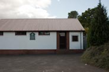

directions
An old scout hut build in the thirties.
It has a nice wooden floor, toilet faclities, it's own car park plus plenty of parking up the side of the building.
It's also easy walking distance from the bus station and the center of town.